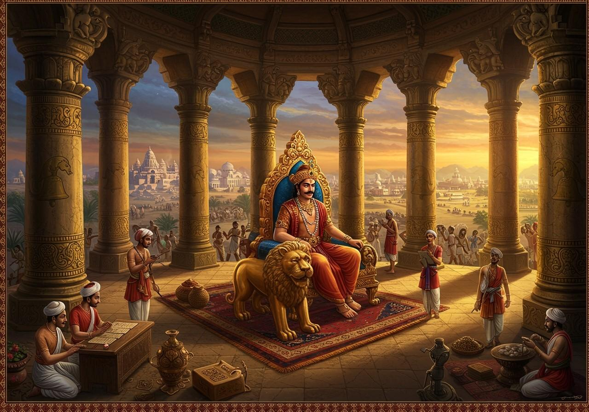

Overview
The Maurya Empire, founded by Chandragupta Maurya, was a powerful political and military empire in ancient India. It reached its peak under Emperor Ashoka.
Map showing the expanse of the Maurya Empire at its height
Chandragupta to Ashoka
Chandragupta laid the foundation, and Ashoka expanded it further after the Kalinga War, embracing Buddhism and spreading it widely.
Administration and Economy
The Mauryas had a centralized administration, with a highly organized bureaucracy and efficient revenue collection system.
Ashoka's Legacy
Ashoka's edicts, engraved on rocks and pillars, reflect his promotion of dharma and non-violence. His reign marks a high point in ancient Indian governance and ethics.